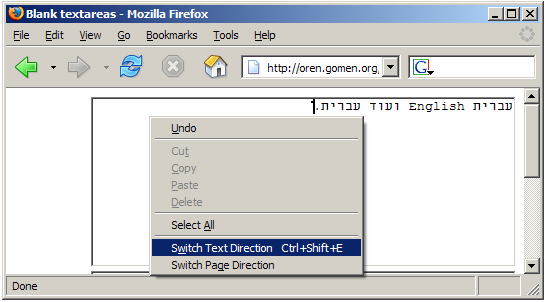

BiDi Browser UI is a simple extension for Mozilla and Mozilla Firefox, which allows Hebrew and Arabic users to control the direction of textareas and entire documents. It is also useful for users of other BiDi languages such as Urdu and Farsi.
This extension attempts to provide the functionality requested in Bug 85420, it does not aim to become a permanent solution. Ultimately, the bug should be fixed so that millions of BiDi users will enjoy the same out-of-the box experience that Mozilla already delivers for non BiDi users.
See installation and usage instructions.